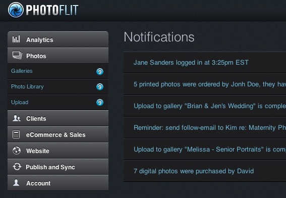

Overview
A developer that began his career as a designer, Brian specializes in being able to build products with the technical excellence of an experienced developer, and the finesse of a veteran designer. Having guided countless web projects from planning to deployment (and all phases in between) and contributing to many product development teams both as a project / technical lead, and working under wise technical leaders. Brian is passionate about the things that make software development less painful and is skilled in leading teams toward a painless and rhythmic development process. Brian is passionate about maintainability, modularity, scalability, reducing technical debt, process optimization, and automation wherever possible. These are facilitated through some or as many of the following as will fit into a company’s process: build automation, peer code review, pair programming, and technical mentoring.
Skills List
JavaScript: Object-Oriented JavaScript, Angular, Backbone, Marionette, Grunt, AMD, Node, Express, AJAX, jQuery
Front-end: LESS, SASS, CSS(3), HTML/HTML5, Responsive Design & Development, Twitter Bootstrap, Visual Design, UI / UX, Interaction Design / animation via CSS3 & JavaScript
Dev Ops: Vagrant, Chef, Puppet, SALT Stack, Amazon AWS (EC2, S3, Cloudfront, Route53)
Back-End: Node, RESTful APIs, MongoDB, PHP, MySQL, WordPress (+ Multisite), Drupal, eCommerce platforms (WooCommerce, Magento, Prestashop, Jigoshop)
Miscellaneous: Shell (Unix), Vim, JSON, version control (git & Mercurial), Photoshop, Illustrator, InDesign, Lightroom, digital photography + post production, photo-manipulation, digital illustration, SEO, Balsamiq (wireframing), & more
Name: Brian Feister
Job Title: JavaScript / Front-end Engineer and UI Developer
Website: dreamstarstudios.com
Portfolio: dreamstarstudios.com
Dribbble: brianfeister
Twitter: @brianfeister
Github: brianfeister
E-mail: brian@dreamstarstudios.com
Phone: 302.562.0308
Address: Newark, Delaware 19711 (USA)


Skills
Front-End Dev
- JavaScript (9)
- Angular.js / Backbone.js / OO JS (9)
- CSS (9)
- HTML (9)
- jQuery (9)
Visual Design
- Photoshop (9)
- UI (9)
- UX (9)
- Illustrator (7)
Interaction Design
- CSS3 & JavaScript Animation (9)
- jQuery DOM Manipulation (9)
Back-End Dev
- Node.js (7)
- WordPress (9)
- PHP (8)
Miscellaneous
- Git, Github, Mercurial (10)
- Command-line / SSH (7)
- SEO (6)
- Photo-retouching / manipulation (10)
- Photography (8)
Experience
JavaScript / Front-End Engineer
(Technical / Project Lead)
Think Brownstone Inc. >> May 2013-Present
Primarily JavaScript web application development (technical lead) with a brilliant team helping large companies tackle tough problems. Think Brownstone is a collective "think tank" of amazing experience designers & developers. Working closely with the visual and UX team to present a front-to-back product where front-end development is tightly woven into the design process for a powerful and effective end result.
Clients Include: Comcast, Janssen, Hay Group, Scoir.
Worked with the following technologies daily: Object-Oriented JavaScript, Angular.js, Backbone.js, Marionette.js, RESTful APIs, AJAX, Grunt.js, jQuery, PHP, WordPress, HTML, Object-Oriented CSS, CSS & JavaScript animations, MVC frameworks, CSS Pre-processors (LESS), git + Github (in a peer-code-reviewed, team environment), and many others. thinkbrownstone.com
-
Project: SaaS JavaScript Web Application for Hiring Managers
Client: Hay Group
Technologies: Backbone.js, Marionette.js, Grunt.js, RESTful API (Java / Spring), HTML5, LESS, CSS3, Twitter Bootstrap, Responsive Web Design, Git flow release strategy.
Responsibilities: Laid web application foundation, setup build automation, determined technology stack, high-level architectural decisions, considered scalability and performance, technical lead / oversight for 5 other developers, facilitated daily standups and propagation of technical knowledge across team, set coding standards, ensured that code was peer reviewed before merging being merged and deployed, ensured accurate translation of UI from design mockups to finished HTML / CSS, technical review of wireframes and design mockups to ensure effective translation into code and pre-empt potentially costly or unrealistic feature requests, help design team ideate more efficient solutions when needed.
-
Project: Data Visualization / Analytics Web Application (within Leading HR Corporation ecosystem)
Client: (Leading HR Corporation)
Technologies: Angular.js, D3.js, RESTful API (Java), HTML5, LESS, CSS3, Responsive Web Design.
Responsibilities: Offered high-level architectural input, developed complex JavaScript functionality that was beyond the capabilities of the core team (including highly complex and interactive D3 data visualizations), major refactor of both the Angular.js layer as well as the UI layer of the application, technical review of wireframes and design mockups to ensure effective translation into code and pre-empt potentially expensive or unrealistic feature propositions, help design team ideate more efficient solutions when needed.
-
Project: “Match.com for College Students & Universities”
Client: Scoir
Technologies: Angular.js, Grunt.js, MongoDB, RESTful API (Go), HTML5, LESS, CSS3, Responsive Web Design.
Responsibilities: Offered architectural input to the CTO by implementing a more streamlined build process via Grunt.js, prepared build process to enable seamless transition to continuous integration / deployment strategy, built significant portion of front-end UI layer and Angular.js web application layer, ensured Angular.js best practices pertaining to scalability and modularity, oversight of design wireframes / sketches / mockups for accurate translation into finished HTML / CSS, technical reviews to warn design team of potentially costly or unrealistic feature requests, help design team ideate more efficient solutions when needed.
Front-End / UI / UX Designer / Developer
Timely Network Inc. >> Jun 2012-Dec 2012
Working on a small, yet effective front-end team for the All-in-One Event Calendar WordPress plugin and it's companion (not-yet-public) enterprise web application Time.ly. Strong directional role in product design, branding, and UI / UX / Interaction design & development for both products.
Worked with the following technologies regularly: PHP, Onject-Oriented JavaScript, WordPress, HTML, Object-Oriented CSS, CSS & JavaScript animations, MVC frameworks, CSS Pre-processors (LESS), git + Github (in a code-reviewed, team environment), and many others. time.ly
Designer / Front-End Developer
Spruce Media Inc. >> Feb 2012-Jun 2012
Designer & front-end developer for large ASP.NET (MVC) web application. Very well-run product development team that scored a 12 out of 12 on the Joel Test.
Worked with the following technologies regularly: Object-Oriented JavaScript, HTML, Object-Oriented CSS, CSS & JavaScript animations, MVC frameworks, CSS Pre-processors (LESS), git + Github (in a code-reviewed, team environment), and many others. sprucemedia.com
Principal / Developer and Designer
DreamStar Studios >> Oct 2007-2013
Working closely with a small number of contractors, managing one full-time junior designer / project manager. At least 30 websites have been built from the ground up by DreamStar Studios, having managed and executed all stages of production from wireframing / storyboarding, through mockup, conversion to XHTML / CSS / PHP / WordPress, and deployment to dedicated private server in LAMP environment.
Employing all of the following technologies / development models: Responsive and adaptive layout / theme design with organic SEO considerations. Scalable Modular Architecture for CSS (SMACSS from Jonathan Snook), Twitter Bootstrap (as a boilerplate), LESS (CSS preprocessor), xHTML, CSS2/3, jQuery / Object-Oriented JavaScript, Balsamiq, SEO, CMS, WordPress (shortcodes, custom functions, custom theming, Roots theme framework), version control (git / Github, Mercurial), MAMP, PHP, MySQL, PHP MyAdmin, eCommerce (Magento, Prestashop, WooCommerce, Jigoshop), SSH, Systems Administrator (sysadmin), Apache, Linux, and various API (YouTube, MailChimp, etc.).
Known for excellence and considered by many to be the best web designer in the NYC performance arts niche market. dreamstarstudios.com
Founder / Organizer
Newark Area Web Entrepreneurs Meetup >> Dec 2011-Present
Founded a local meetup group dedicated to organizing and unifying local web professionals. Open monthly business meetings to discuss entrenpreneurship, technology, trends in the industry, tools of the trade and other things which help all members maintain a high standard for their work quality and business practices.
Photographer
Brian Feister Photography >> Nov 2007-Present
Photographer well-known in NYC performing artist community and a frequent guest photographer at exclusive highly acclaimed performance arts productions. brianfeisterphotography.com
Founder / Director
Newark CoWork >> Sep 2010-Present
Acting director (and founder) of Newark CoWork, a community endeavor for entrepreneurs, small business owners, freelancers, and creative professionals to share space, ideas, visions, dreams, and more. CoWorking is a fresh and innovative way to work that encourages both creativity & productivity. newarkcowork.com
Operations Manager
The Body Works Academy >> Jan 2011-Present
Manage a fitness consulting company with a team of 10 ~ 20 personal trainers and group fitness instructors. Stabilized and grew the company, negotiated new contracts, managed scheduling, training, operations, billing, administration, and instruction. Clients include regional gyms, hospitals, corporate locations, community centers, senior centers, churches, and other non-profit organizations.
References
Gabriel Liwerant - Colleague who worked with me to build a large-scale JavaScript web application where I was the technical lead.
Paul Hoepfner-Homme - Team lead at Time.ly, UI/UX Design & Dev lead.
Jordan Ambra - Web-based entrepreneur and professional web developer. Colleague and fellow member of the Newark Are Web Entrepreneurs Group.
Connect with me on LinkedIn to read my professional recommendations.